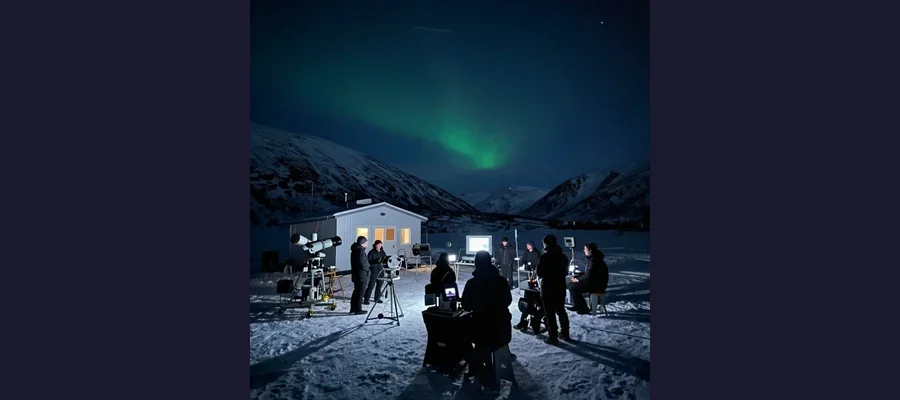
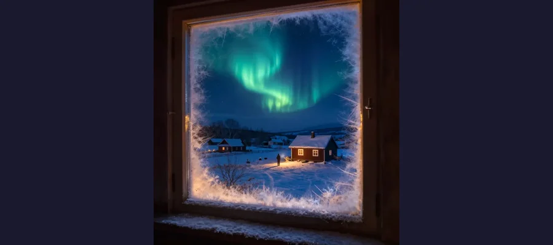

The Hessdalen Lights

The mysterious Hessdalen Lights - unexplained glowing orbs in Norway's sky!
In a remote valley in Norway, strange lights have been appearing in the sky for nearly a century. These glowing orbs float through the air, change colors, and sometimes dart around at incredible speeds. Thousands of people have seen them, and scientists have been studying them for decades - but no one can fully explain what they are!
But here's the mystery: what causes these lights? Are they a rare natural phenomenon, something from outer space, or something else entirely?
Overview
What Are the Hessdalen Lights?
The Hessdalen Lights appear in the Hessdalen valley in central Norway. They look like glowing balls of light, usually white or yellow, but sometimes red, blue, or green. They can be as small as a basketball or as big as a car!
These lights don't behave like anything else we know. They can hover motionless for hours, drift slowly through the sky, or suddenly zoom away at amazing speeds. Some have even been seen splitting into multiple lights or merging together!
💡 Frequency
At their peak in the 1980s, the lights appeared up to 20 times per week! Today, they're seen about 10-20 times per year.
The History of Sightings

The remote Hessdalen valley in Norway, home to one of the world's most studied unexplained phenomena.
Local people have reported seeing strange lights in Hessdalen for over 100 years. But in December 1981, something changed - the lights started appearing much more frequently and intensely!
For the next several years, the lights appeared almost every night. They became so common that tour groups started coming to watch them! Scientists from around the world descended on the tiny valley to study this mystery.
🔭 Scientific Study
Since 1983, scientists have set up permanent research stations in Hessdalen to monitor the lights with cameras and instruments!
Evidence
Historical work on The Hessdalen Lights is strongest when primary records, material traces, and later peer-reviewed analysis point in the same direction. This layered approach helps separate observations from retellings and reduces the risk of repeating popular but unsupported claims.
The Scientific Investigation

Scientists have used radar, spectrographs, and cameras to study the lights - but they remain mysterious!
Scientists have proposed many theories about what causes the Hessdalen Lights:
- Combustion of dust: The valley contains minerals that might create burning plasma balls
- Battery hypothesis: Special geological conditions might create natural "batteries" that produce glowing plasma
- Piezoelectric effect: Pressure on certain rocks might generate electricity that creates light
- Dusty plasma: Charged dust particles in the air might form glowing clusters
Competing Explanations
Competing explanations usually persist because each one fits part of the evidence while missing another part. Researchers test these models against chronology, physical constraints, and independent documentation to identify which interpretation requires the fewest assumptions.
What Makes This Mystery Special?
Unlike many unexplained phenomena, the Hessdalen Lights are:
- Well-documented: Thousands of photographs and videos exist
- Studied scientifically: Real scientists with real equipment have investigated them
- Predictable: They appear often enough to be studied regularly
- Unexplained: Despite decades of study, no theory explains everything!
🔬 Spectral Analysis
When scientists analyze the light's spectrum, they find it contains elements like scandium - a rare earth element found in the valley's soil!
Open Questions
Open questions remain because source quality is uneven across time: some records are direct and detailed, while others are fragmentary or second-hand. Future archival discoveries, improved imaging, and more precise dating methods may refine conclusions without overturning well-supported core findings.
The Mystery Continues
Today, researchers continue to study the Hessdalen Lights. Automated cameras watch the valley 24/7. Scientists hope that new technology might finally solve this mystery.
Whatever they are, the Hessdalen Lights remind us that our world still holds secrets waiting to be discovered!
References & Further Reading
Editorial note: We cross-check claims across multiple independent sources. See our Editorial Policy.